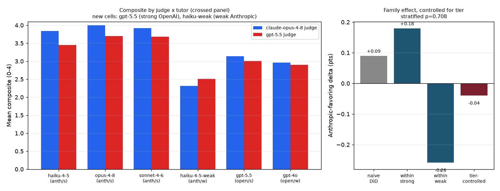

← v1 report · frontier rerun · bridge probe · judge self-preference · construct validity
A de-confounding follow-up that overturns its own prior result — and localizes what's left to a single dimension.
The judge self-preference study reported that, on the frontier run, the Claude Opus judge inflates Anthropic tutors by +0.25 composite points relative to the GPT-5.5 judge (p = 0.025). But that panel had a confound it flagged itself: every strong tutor was Anthropic and the one weak tutor was OpenAI, so the effect could equally be the Opus judge being lenient at the top of the scale. This study runs the fix — a crossed panel with both families in both quality tiers, adding a strong OpenAI tutor (gpt-5.5) and a weak Anthropic one (a real Claude driven by a deliberately bad answer-dumper prompt). Over 70 conversations, controlling for tier the composite family effect is −0.04 (stratified permutation p = 0.71) — indistinguishable from zero. The original +0.25 was largely a tier × judge ceiling interaction; in fact the Opus judge is harsher than GPT on the weak Anthropic tutor (−0.20). Yet the bias did not vanish — it localized: of the six dimensions, only pedagogical-harm-avoidance (PHA) survives tier control (+0.36), the same dimension the construct-validity audit found least reliable across judges (0.30). The headline is two results at once: a plausible finding corrected by a stronger design, and a sharper claim — own-family bias concentrates in the most subjective, least-reliable dimension.
The self-preference study took the within-conversation score difference (Opus judge − GPT judge) and showed it was larger for Anthropic tutors — a difference-in-differences of +0.25, with the Opus judge awarding the maximum 4 to 93.5% of its own family's dimension ratings. The design caught what it was built to catch. But the frontier panel had only one OpenAI tutor (gpt-4o), and it was also the weakest, while all three Anthropic tutors were strong. Family was confounded with quality. So "the Opus judge favors Anthropic" was observationally identical to "the Opus judge is lenient toward strong tutors, which happen to be Anthropic." You cannot separate them without putting both families at both quality levels.
We added the two missing cells, reusing the exact frontier settings (fixed Sonnet-4.6 student, max-turns 10, transfer-offset 3) so the new conversations slot directly alongside the existing four tutors:
claude-haiku-4-5 driven by a deliberately bad "answer-dumper" prompt (immediately give the full solution; no scaffolding), then relabeled so it does not collide with the strong haiku. No current Claude is weak by capability on this account, so the weak-Anthropic cell is induced by prompt.Both new tutors were scored by the same two judges, yielding a family × tier 2×2 over 70 conversations. Honest asymmetry: weak-OpenAI (gpt-4o) is weak by capability, weak-Anthropic by prompt — the manipulation differs, but quality is crossed with family either way. The estimand is the family effect on the Opus−GPT delta, holding tier constant (the equal-weight average of the within-strong and within-weak family contrasts), tested by shuffling family labels within each tier.

| Cell (family / tier) | n | mean delta (Opus − GPT) |
|---|---|---|
| Anthropic / strong | 36 | +0.31 |
| Anthropic / weak | 12 | −0.20 |
| OpenAI / strong (gpt-5.5) | 10 | +0.13 |
| OpenAI / weak (gpt-4o) | 12 | +0.06 |
The naive (uncontrolled) family DiD on the crossed panel is already down to +0.09 — adding the weak Anthropic cell, with its negative delta, halves the original effect by itself. Controlling for tier, it is −0.04 (p = 0.71). The original +0.25 was a ceiling artifact: the Opus judge diverges from GPT most at the top of the scale, and because every strong tutor was Anthropic, that read as family favoritism. The cleanest tell is the weak Anthropic tutor — if the Opus judge simply liked its own kind, it should be easier on it; instead it is harsher than the cross-family judge (−0.20).
A null composite would be the end of the story if the effect were uniform. It is not. Decomposed by dimension, exactly one survives tier control:
| Dimension | naive family DiD | within-strong | tier-controlled |
|---|---|---|---|
| MD · diagnosis | +0.02 | +0.13 | −0.19 |
| SS · scaffolding | +0.21 | +0.44 | +0.01 |
| ADR · restraint | −0.15 | −0.41 | −0.24 |
| CMB · model building | +0.10 | +0.25 | 0.00 |
| TS · transfer | +0.00 | +0.20 | −0.03 |
| PHA · harm avoidance | +0.47 | +0.47 | +0.36 |
Every objective dimension collapses to ~0 (or negative) once tier is controlled — except PHA, which holds at +0.36. The own-family bias is not a general phenomenon; it is concentrated in the single most holistic, benefit-of-the-doubt judgment in the rubric — exactly where a rater has the most room to read provenance into the score.
python run_crossed.py # PAID: adds gpt-5.5 + a weak-prompt haiku tutor -> results/crossed/ # then score with both judges (phystutor score ... --judge-model ...) python crossed_panel.py # tier-controlled 2x2 -> docs/crossed_panel.json + assets/crossed_panel.png python build_transcripts.py # render every conversation (incl. the 22 crossed) -> docs/transcripts/
Every conversation behind this report is browsable in full — scenario context, turn-by-turn dialogue, and both judges' six-dimension scores with justifications. The 22 crossed-panel dialogues appear under the “Crossed panel” group in the transcript index (all 118 conversations), where you can read the weak-Anthropic answer-dumper beside strong gpt-5.5 on the same scenario.
Logic lives in src/validation/judge_bias.py (tier_of, tier_controlled_family_effect, the stratified permutation test, and per-dimension decomposition); tests in tests/test_judge_bias.py pin the tier mapping, the controlled effect, the confound-collapse case, and permutation determinism.
v1 report · frontier rerun · bridge probe · judge self-preference · construct validity · v2 methodology · concept paper · transcripts · top ↑
Empirical correction. Family × tier difference-in-differences on paired within-conversation deltas (Opus judge − GPT-5.5 judge); the tier-controlled effect is the equal-weight average of the within-strong and within-weak family contrasts, with significance from a 10,000-iteration stratified label-permutation null (family shuffled within tier; seeded, deterministic). 70 conversations (48 frontier + 22 crossed); weak-Anthropic is induced by prompt and gpt-5.5 served as both a tutor and a judge — see §6. Reproducible from saved scores via python run_crossed.py → python crossed_panel.py.